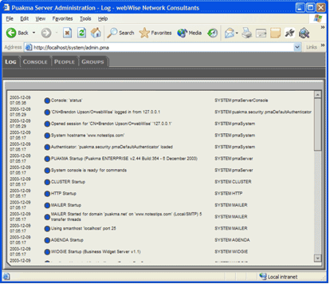
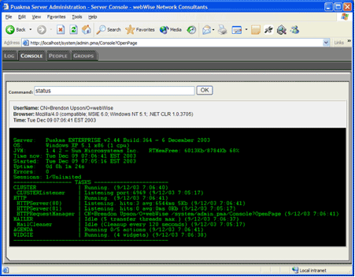

The server may be controlled with a web browser. An administration application
is included to make the process of managing and monitoring your Puakma server very
easy. The administration application may be found here: http://your_server/system/admin.pma
Remember that you will be prompted for a username and password. This will initially be
sysadmin, with the password allocated during the install process.

Informational messages are displayed with a blue spot, errors in red and debug messages in yellow. This makes it very easy to troubleshoot problems.
Remote access to the server console is also provided through the web browser interface. 